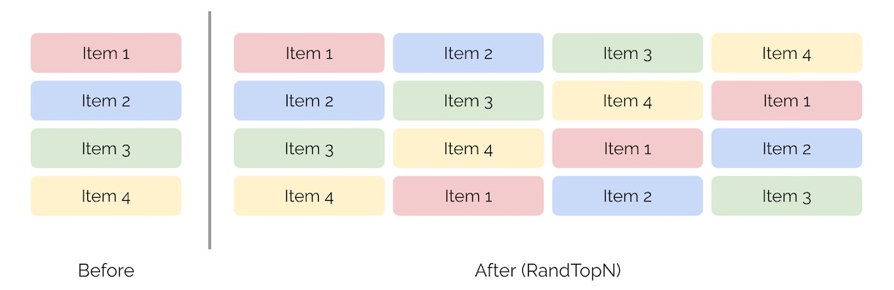
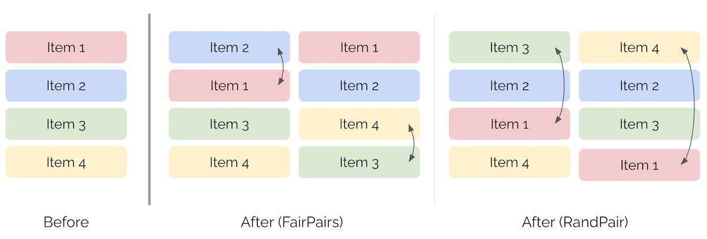

Recommendation Systems • Bias
- Overview
- Biases in Recommender Systems
- Position Bias: An In-Depth Look
- Summary
- References
- Citation
Overview
- Recommender systems are powerful tools in modern applications, helping to personalize content for users. However, they are susceptible to various biases that can distort their effectiveness and fairness. This article delves into five key biases in recommender systems and explores technical solutions to mitigate them.
Biases in Recommender Systems
Position Bias
-
Problem: In list-based interfaces, such as search engine results or recommendation systems, users tend to interact more with items at the top of the list. This phenomenon, known as position bias, occurs because users tend to focus on items ranked higher, irrespective of their relevance. Put simply, users often assume that items appearing first are more relevant, even if that isn’t always the case. This bias can lead to skewed engagement metrics, misrepresenting the true relevance of items and potentially reinforcing suboptimal ranking decisions.
-
Solutions: Each of the below solutions addresses position bias differently, balancing the trade-offs between accurately estimating bias and maintaining user experience. Combining these methods or selecting the most appropriate one based on the specific application can lead to more fair and effective ranking systems.
- Inverse Position Weighting (IPW):
- Inverse Position Weighting (IPW) is a method used to adjust the training process of recommender systems to account for position bias. Position bias occurs because users tend to interact more with items at the top of a list, assuming those items are more relevant, which can lead to skewed engagement metrics. By using IPW, the recommender system compensates for this bias, ensuring a more balanced and accurate model. In other words, by using inverse weights, the system gives more importance to items at lower positions during training. This approach helps to mitigate the natural tendency of users to interact primarily with top-positioned items, leading to a fairer and more effective ranking system that accurately reflects the relevance of items, independent of their position in the list.
- The formula for IPW is given by:
- where:
- \(w_i\) is the weight for the \(i^{th}\) position.
- \(\text{position_bias}(i)\) represents the degree of bias associated with that position.
- Applying IPW: Once position bias is measured—typically through analyzing user interaction data or controlled experiments—IPW can be applied effectively. The method involves the following steps:
- Weight Calculation: The weights are calculated using the above formula. If the position bias is high at position \(i\), implying that items at this position receive disproportionate attention, the corresponding weight \(w_i\) will be low. Conversely, items at lower positions, which naturally receive less attention, will have higher weights, thus compensating for their lower visibility.
- Training Adjustments: During the training of the recommender model, these weights are incorporated into the training process. Specifically, when calculating loss functions, the error associated with items in less visible positions is given more weight. This adjustment ensures that the model learns to pay more attention to these instances, rather than focusing solely on optimizing for items in top positions. As a result, this reduces the overemphasis on items at the top, leading to more balanced recommendations across different positions in the list.
-
Result Randomization: To understand the true effect of position bias, one approach is to randomly shuffle the top-ranked items for a subset of users. By observing changes in user engagement patterns as a result of this randomization, position bias can be estimated. However, this method has a trade-off: while it helps quantify bias, randomizing results can degrade the user experience, as users may be shown less relevant items at higher positions.
-
Intervention Harvesting: Instead of actively introducing randomization, this approach leverages historical engagement data from different model versions or naturally occurring variations in ranking order. By analyzing how users interacted with items under various conditions and rankings, it is possible to infer position bias without the need for deliberate interventions. This method minimizes disruption to user experience while still providing insights into position bias.
-
Google’s Rule 36: Based on Google’s Rules of Machine Learning: Best Practices for ML Engineering, Google’s Rule 36 addresses position bias by incorporating the rank position as a feature during the training of machine learning models. The idea is to make the model aware of the influence of position bias and to control for it during training. This is achieved by:
-
Including the Rank as a Feature: During training, the rank of each item is included as a feature: \(\text{features} = [\text{other_features}, \text{rank}]\). This way, the model can learn the effect of rank on user engagement.
-
Neutralizing the Rank Feature During Inference: When making predictions, the rank feature is set to a default value (e.g., -1) to neutralize its influence. This ensures that the model’s predictions reflect the inherent relevance of the items rather than the effect of their position in the list.
-
- Inverse Position Weighting (IPW):
Measuring Position Bias
- Measuring position bias typically involves analyzing user interaction data or conducting controlled experiments to observe how user engagement varies across different list positions. Once measured, the remedial actions listed above help counteract this bias by assigning higher weights to items in less prominent positions, ensuring that the model considers the entire list more equitably. This approach helps to mitigate the reinforcement of suboptimal ranking decisions and leads to a fairer and more effective recommender system.
-
Measuring position bias typically involves the following steps:
- Observational Data Analysis:
- User Interaction Data: Position bias can be measured by analyzing large amounts of user interaction data. This data includes clicks, views, and other engagement metrics at different positions in the ranked list. By comparing the engagement rates at different positions, one can observe the natural decay in attention and clicks as users move down the list.
- CTR Analysis: A common way to measure position bias is to analyze the click-through rate (CTR) for each position. CTR is defined as the number of clicks divided by the number of impressions for each position. The decline in CTR with lower positions is an indicator of position bias.
- Randomized Experimentation:
- A/B Testing: Conducting controlled experiments where items are randomly shuffled across different positions allows for the estimation of position bias. By comparing user engagement metrics for the same item at different positions, it is possible to isolate the effect of the position from the inherent relevance of the item.
- Interleaving Methods: This involves interleaving items from different ranking algorithms in a single list and observing user interactions. By analyzing how often users select items from each algorithm, the effect of position bias can be estimated.
- Position Bias Modeling:
- User Behavior Modeling: Sophisticated statistical models can be used to estimate position bias. For instance, models like the Cascade Model or the Examination Hypothesis assume that users go through the list sequentially, with a certain probability of examining and clicking each item based on its position. Parameters of these models can be learned from user interaction data, helping to quantify the position bias.
- Observational Data Analysis:
Popularity Bias
-
Problem: In recommendation systems, popularity bias occurs when the model disproportionately favors popular items due to their higher interaction rates. This means that items with more historical interactions are more likely to be recommended, potentially at the expense of other relevant but less popular items. Such bias can lead to a lack of diversity in recommendations and the underrepresentation of niche items that may still be highly relevant to individual users.
-
Solution: Logit Adjustment for Popularity Correction
-
To address popularity bias, a common approach is to adjust the logits (i.e., the inputs to the final softmax layer in a neural network model) by incorporating a correction term based on the item’s popularity. The goal of this adjustment is to balance the recommendation exposure between popular and niche items. Implementing logit adjustment for popularity in recommendation systems is a powerful method to address bias, promote content diversity, and improve user experience by personalizing recommendations beyond popular items.
-
Adjustment Formula: The logit for a user \(u\) and an item \(v\) is adjusted as follows:
- Explanation:
- \(\text{logit}(u, v)\): This is the original logit value for user \(u\) and item \(v\), representing the model’s raw preference prediction.
- \(\log(P(v))\): This term represents the logarithm of the probability of item \(v\) being interacted with, based on historical data. It acts as a popularity correction factor.
- By subtracting \(\log(P(v))\), the adjustment normalizes the predicted odds based on the item’s popularity. This penalizes popular items (which have a high \(P(v)\) and thus a high \(\log(P(v))\)), reducing their logit value, while giving a relative boost to less popular items (with low \(P(v)\)), thus encouraging the model to recommend a more balanced mix of items.
-
Measuring Popularity
-
To implement the logit adjustment, we need a reliable measure of item popularity. This can be achieved by estimating \(P(v)\), the probability of interaction with item \(v\). Common approaches to estimate \(P(v)\) include:
-
Interaction Frequency: Calculate the proportion of interactions each item has relative to the total number of interactions across all items. For item \(v\), the probability can be estimated as:
\[P(v) = \frac{\text{Number of interactions with item } v}{\text{Total number of interactions}}\] -
User Count: Measure the proportion of unique users who have interacted with the item, considering it as a proxy for popularity. The formula is similar:
\[P(v) = \frac{\text{Number of unique users who interacted with item } v}{\text{Total number of unique users}}\] -
Weighted Interaction Count: To account for repeated interactions or the recency of interactions, a weighted approach can be used, where more recent interactions or interactions by active users are given higher weight.
-
Implicit Feedback: For systems where implicit feedback (e.g., views, clicks) is available, item popularity can be inferred from these signals, adjusting \(P(v)\) based on the type and quality of feedback.
-
Benefits of Logit Adjustment
- Balancing Recommendations: This adjustment helps balance recommendations between popular and niche items, providing a more diverse set of recommendations.
- Reducing Overfitting to Popularity: By normalizing logits with respect to item popularity, the model reduces its tendency to overfit to items that are popular in the training data, which might not be equally relevant in future scenarios.
- Enhancing User Experience: Users may discover new and relevant content that they would not have otherwise encountered, improving overall user engagement and satisfaction.
Practical Considerations
- Parameter Tuning: The degree of logit adjustment can be controlled and may require tuning to achieve the desired balance between popular and niche item recommendations.
- Popularity Dynamics: Popularity can change over time. The measure \(P(v)\) should be periodically updated to reflect current trends and user interests.
- Scalability: Efficient computation and storage of \(\log(P(v))\) is crucial, especially in large-scale systems with millions of items.
Selection Bias/Feedback Loops
-
Problem: Selection bias arises in recommendation systems when the data used to train the model does not represent the full spectrum of user behavior or content. This bias often occurs because recommendations are typically based on users’ past interactions, which might not fully capture their preferences or interests. For instance, items that were not exposed to users in the first place (e.g., because they were buried at the bottom of a list or never recommended) will have no recorded interactions, leading to a skewed perception of their relevance or popularity. As a result, the system may favor items that were previously seen and interacted with, while underrepresenting items that, though relevant, were not exposed to users. This creates a feedback loop where certain content repeatedly gets promoted, further skewing recommendations.
-
Solution: Inverse Propensity Scoring/Weighting (IPS/IPW)
-
One effective method to counter selection bias is Inverse Propensity Scoring/Weighting. The key idea is to re-weight the data based on the likelihood (or propensity) that a user was exposed to a given item. This ensures that items with a low chance of being seen are not unfairly disregarded in the model’s training process, balancing the recommendation landscape.
-
IPS Formula: The weight for a user-item interaction is adjusted based on the probability that the user would have been shown that item:
\[w_i = \frac{1}{P(i \mid u)}\]- where:
- \(w_i\) is the weight for the user-item interaction.
- \(P(i \mid u)\) is the propensity score, or the probability that user \(u\) was exposed to item \(i\).
- Explanation: If an item has a low propensity of being shown to the user, its interactions will receive a higher weight in the training process. Conversely, interactions with items that were highly likely to be shown to the user will be down-weighted. This rebalancing ensures that the model considers not only the items users interacted with but also the ones they might have interacted with had they been exposed.
- where:
-
Propensity Estimation: Estimating the propensity score is crucial for this method. Propensity can be modeled based on various factors, such as item popularity, position in a list, user demographics, and past behavior. For example, a logistic regression model could be used to predict the probability of an item being shown to a user based on these features.
-
Benefits of IPS
- Fairness: By re-weighting based on exposure likelihood, IPS helps mitigate the overrepresentation of frequently shown items and gives a fairer chance to underexposed ones, leading to more balanced recommendations.
- Reducing Feedback Loops: IPS reduces the self-reinforcing cycle where certain items repeatedly dominate recommendations due to past exposure, leading to a richer and more diverse recommendation experience.
- Improved Model Accuracy: By accounting for unobserved interactions (i.e., items users might have interacted with if given the chance), IPS enhances the model’s ability to generalize and make more accurate predictions.
Measuring Selection Bias
-
Selection bias can be measured by analyzing how the probability of user exposure (propensity) influences interaction rates. If certain items are consistently underrepresented in the dataset, even though they might be relevant, this signals the presence of selection bias.
- Interaction Analysis: Examine the distribution of interactions across items and users. Items or users with disproportionately low interaction rates relative to their expected exposure indicate potential selection bias.
- Propensity Modeling: Use machine learning models to estimate the propensity of each item being shown to each user, then compare these probabilities to the actual interaction data to assess bias.
- Controlled Experiments: Conduct randomized exposure experiments where users are shown items regardless of past behavior or preferences, allowing a clearer view of the full range of user interests and interactions.
Practical Considerations
- Propensity Estimation: The accuracy of IPS depends on the correct estimation of propensity scores. If these scores are inaccurate, the re-weighting process may introduce new biases.
- Data Sparsity: In systems with many items and few interactions, propensity scores can be challenging to estimate, particularly for less popular or newly introduced items.
- Scalability: Implementing IPS in large-scale systems requires efficient computation of propensity scores and their incorporation into the training pipeline.
Duration Bias
-
Problem: In many recommendation systems, there’s an inherent bias toward longer videos. This happens because these models often use watch time as a primary signal for relevance or engagement. As a result, longer videos tend to have higher cumulative watch times, making them seem more engaging or relevant than they might actually be. This bias can lead to an over-representation of longer content in recommendations, potentially overlooking shorter videos that are equally or more relevant to the user’s interests.
- Solution: Quantile-based Watch-Time Prediction
-
Duration Quantiles: To address this bias, videos are first categorized into different groups (or quantiles) based on their lengths. This categorization helps normalize the impact of video length on watch time by comparing watch time within groups of similarly lengthed videos.
-
Watch Time Quantiles: Within each duration quantile, watch times are further divided into quantiles. This allows for a comparison of watch times that accounts for video length, effectively leveling the playing field between short and long videos.
-
Implementation: The approach involves using quantiles to predict and compare watch times relative to video lengths. The two key steps are:
- Calculating Duration Quantiles:
- Bucket videos by their lengths into a specified number of quantiles (
num_quantiles). This is done using the following formula:
- Here,
durationrefers to the length of the video, andnum_quantilesis the number of quantiles to divide the videos into. The result is a quantile value that represents the video’s length category.
- Bucket videos by their lengths into a specified number of quantiles (
- Calculating Watch Time Quantiles:
- For each duration quantile, bucket the actual watch times into another set of quantiles. This is represented by:
watch_timerefers to the total time a video has been watched, andnum_quantilesis again the number of quantiles to divide the watch times into within each duration bucket. This results in a watch time quantile value that represents the relative engagement level within its duration group.
- Training the Model:
- The model is then trained to predict
watch_quantilebased onvideo_quantileand potentially other features. By doing so, the model learns to predict relative engagement rather than absolute watch time. This method ensures that the recommendations are more balanced and do not inherently favor longer videos just because they have higher cumulative watch times. Instead, it recognizes the relevance of shorter videos if they perform well within their own duration quantiles.
- The model is then trained to predict
- Calculating Duration Quantiles:
-
- Benefits:
- Fairness: This approach provides a fairer comparison of videos of different lengths, ensuring that shorter videos are not penalized merely due to their length.
- Relevance: It enhances the relevance of recommendations by focusing on relative engagement, potentially increasing user satisfaction by promoting content that is truly engaging rather than simply long.
- Diversity: By reducing duration bias, the recommendation system can surface a more diverse range of content, catering to different user preferences and content types.
Clickbait Bias
-
Problem: Recommender systems often face the challenge of clickbait bias, where the use of clicks as a primary positive signal tends to favor sensational or misleading content that attracts attention but may not provide substantial value. This type of content can lead to a degraded user experience, as users are directed towards shallow or misleading information instead of high-quality, engaging material.
-
Solution: To counteract clickbait bias, a method called Weighted Logistic Regression can be employed, which introduces a more refined way to assess the value of content beyond just clicks. This method aims to prioritize content that not only attracts clicks but also holds the viewer’s attention for a longer period, suggesting higher engagement and value. This method provides a balanced approach, encouraging content creators to produce engaging, high-quality material that genuinely resonates with the audience, rather than just attempting to capture attention through clickbait tactics.
-
Standard Logistic Regression: In traditional approaches, logistic regression is used to model the likelihood of a click. Here, clicks are treated as positive examples (indicating interest or relevance), while no-clicks are considered negatives (suggesting lack of interest). This binary classification approach is straightforward but doesn’t differentiate between content that merely attracts clicks and content that genuinely engages the viewer.
-
Weighted Logistic Regression: The proposed solution modifies the standard logistic regression by introducing weights based on watch time. Instead of treating all clicks equally, Weighted Logistic Regression adjusts the importance of each click using the amount of time users spend engaging with the content. The idea is that content with longer watch times is more engaging or valuable, and therefore, clicks associated with such content should carry more weight.
-
Implementation:
The logistic function is modified to incorporate watch time as a weighting factor for positive examples. The logit function, which is the natural logarithm of the odds, is adjusted as follows:
\[\text{logit}(u, v) = \frac{\text{watch_time}(u, v)}{\text{click}(u, v) + 1}\]- Variables:
- \(u\): Represents the user.
- \(v\): Represents the content item (e.g., video, article).
- \(\text{watch_time}(u, v)\): The amount of time user \(u\) spends watching content \(v\). This is used as the weight for the click, reflecting how engaging the content is.
- \(\text{click}(u, v)\): A binary indicator (1 if the user clicked on the content, 0 otherwise).
- Explanation: This formula effectively assigns higher weights to clicks associated with longer watch times, allowing the logistic regression model to learn to favor content that not only gets clicked but also keeps the viewer engaged. By adding 1 in the denominator, the model ensures that the ratio remains defined even if a user doesn’t click, preventing issues where the denominator could become zero. This adjustment helps mitigate situations where short but highly engaging content might otherwise be undervalued. Specifically, when content has a short exposure duration (i.e., shown only a few times), there is a risk that even engaging content might not receive clicks simply due to limited opportunity. Adding 1 to the denominator moderates the impact of such short exposure. For instance, if a piece of content has 0 clicks and is shown 1 time, the unadjusted ratio would be
0/0 = undefined. With the adjustment, it becomes0/(1+1) = 0/2 = 0. This small but important adjustment reduces the extreme effect of a zero count in the denominator and provides a buffer, ensuring that content is not overly penalized for lack of clicks due to short exposure. As a result, the model can provide a more balanced and accurate evaluation of content engagement, recognizing the potential of content that might not have had sufficient exposure to generate clicks.
- Variables:
-
Outcome: By using Weighted Logistic Regression, the recommender system can better distinguish between mere clickbait (content that attracts clicks but not sustained engagement) and genuinely engaging content (that attracts clicks and retains viewer interest). This approach reduces the emphasis on sensational, low-value content, fostering a more informative and satisfying user experience. It helps align the recommendations more closely with content quality and user satisfaction rather than just click metrics.
-
Single-Interest Bias
-
Problem: Models often develop a bias toward the most frequent user interest, leading to overemphasis on that interest and neglecting the user’s diverse preferences. This single-interest bias results in a narrow range of recommendations that fail to reflect the full spectrum of a user’s tastes and interests, ultimately reducing user satisfaction and engagement.
- Solution: Platt Scaling
- Calibration Technique: Platt scaling is a post-processing calibration method used to adjust the predicted probabilities from a model to better match the actual probabilities. It does so by fitting a logistic regression model to the outputs of the original model using a scaled sigmoid function. This approach effectively recalibrates the model’s output to provide more accurate probability estimates.
-
Formula: Platt scaling transforms the raw model output \(f(x)\) into a calibrated probability \(P(y = 1 \mid x)\) using the following formula:
\[P(y = 1 | x) = \frac{1}{1 + \exp(A \cdot f(x) + B)}\]- where:
- \(A\) and \(B\) are parameters learned from a hold-out set (a separate validation dataset), typically via optimization techniques like maximum likelihood estimation.
- \(f(x)\) represents the raw score or logit output from the original model.
- where:
- Outcome: By applying Platt scaling, the model achieves better alignment between predicted probabilities and actual user preferences. This results in improved recommendation diversity, as the calibrated model is less likely to overfit to the most frequent interests and can more accurately reflect the user’s varied preferences. The effectiveness of this approach can be quantified using metrics like Kullback-Leibler (KL) divergence, which measures the difference between the predicted probability distribution and the true distribution of user interests. A lower KL divergence indicates a closer match, demonstrating improved recommendation quality and user satisfaction.
Position Bias: An In-Depth Look
Overview
-
Position bias occurs when items displayed at the top of a list (e.g., search results, recommendation list) are more likely to be clicked on or selected than items displayed lower down, regardless of relevance. This bias results from several factors:
- Attention Bias: Users focus more on prominently positioned items.
- Trust Bias: Users assume top items are more trustworthy or higher quality.
- Default Bias: Users choose top items because they are easier to access.
- Feedback Bias: Higher-ranked items get more feedback, reinforcing their position.
- Information Overload: Users rely on heuristics like position or popularity to make quick decisions.
Measuring Position Bias
Examine User Engagement by Position
- Analyze click-through rate (CTR) or conversion rate across different positions.
- Plot CTR or conversion rate for each position to identify trends.
Calculate Position-Based Metrics
- Use metrics like discounted cumulative gain (DCG) and expected reciprocal rank (ERR) to evaluate position effects:
- DCG Calculation: \(\text{DCG} = \sum_{i=1}^{N} \frac{relevance_i}{\log_2(i+1)}\)
- ERR Calculation: \(\text{ERR} = \sum_{i=1}^{N} \frac{1}{i} \left(\prod_{j=1}^{i-1} (1-R_j)\right) R_i\) where \(R_i\) is the probability of relevance at position \(i\).
Randomize Item Positions
- Randomly shuffle items for a subset of users to measure engagement changes, though this can negatively impact user experience.
- This is not a recommended approach as it results in terrible user experience and can be quite costly. We can see how it would look with the illustration below (source).

Control for Item Popularity
- Group items by popularity or quality and compare engagement metrics within each group.
- Use propensity score matching to create balanced user groups and compare metrics.
Use Counterfactual Evaluation
- Simulate outcomes of different strategies and compare to baseline.
- Use A/B testing or multi-armed bandit algorithms to test strategies in a live environment.
Infer Position Bias via Expectation Maximization (EM)
- Use EM to infer click probability based on item position.
- Model CTR as a function of position and use EM to estimate position bias.
FairPairs and RandPair
- FairPairs: Swap items at positions \(k\) and \(k+1\) to introduce randomness and reduce bias.
- RandPair: Swap the first item with a randomly selected item, introducing more aggressive randomness.
- The image below (source) represents the ranking of items after both FairPairs and RandPair.

Mitigation Strategies for Position Bias
- Add Randomness: Randomize item positions to reduce bias.
- De-bias Logged Data: Use inverse propensity scores to weight training data based on position bias.
- Include Positional Features: Add positional features to the model to account for position impact.
Summary
- Recommender systems personalize content for users but can suffer from various biases, reducing their effectiveness and fairness. This article examines six key biases: position, popularity, duration, clickbait, single-interest, and selection biases.
- Each bias influences user engagement differently, favoring sensational, longer, popular, top-ranked content, or previously seen items, while potentially underrepresenting other relevant content. Selection bias, in particular, arises when recommendations are based only on observed user interactions, overlooking content that users were never exposed to.
- To mitigate these issues, techniques like IPW, logit adjustment, quantile-based watch-time prediction, weighted logistic regression, Platt Scaling and IPS.
- These methods aim to balance content recommendations, ensure fair comparisons, and improve user experience by systematically addressing biases and enhancing the diversity and relevance of recommendations.
References
- Eugene Yan: How to Measure and Mitigate Position Bias
- How to Reduce Position Bias in Recommender Systems
- Google’s best practices for ML Engineering
- Machine Learning Frontiers: (Some) Biases in Recommender Systems You Should Know
Citation
If you found our work useful, please cite it as:
@article{Chadha2020DistilledBiasRecSys,
title = {Bias in Recommendation Systems},
author = {Chadha, Aman},
journal = {Distilled AI},
year = {2020},
note = {\url{https://aman.ai}}
}